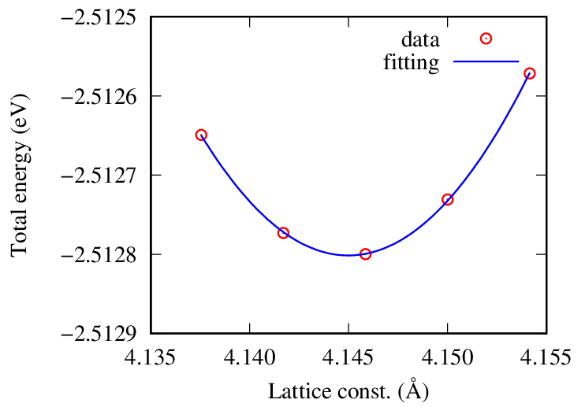

格子定数
SQUIDにインストールしたGPAWで格子定数を計算する方法を説明する。
計算条件
- Agの面心立方格子
- LCAOのdzp基底
- PBE交換相関汎関数
- 16x16x16k点サンプリング
サンプルスクリプト
次のスクリプトをinput.pyに保存する。
格子定数の目安を4.15 Åとして99%〜101%の範囲で変化させる。
from ase.build import bulk
from gpaw import GPAW, MethfesselPaxton, Mixer
from ase.io import Trajectory
from gpaw.utilities import h2gpts
from gpaw import extra_parameters
extra_parameters['blacs'] = True
import numpy as np
a0 = 4.15
traj = Trajectory('ag.traj', 'w')
for eps in np.linspace(-0.01, 0.01, 21):
a = (1 + eps) * a0
ag = bulk('Ag', 'fcc', a=a)
ag.calc = GPAW(mode='lcao', basis='dzp', xc='PBE',
occupations=MethfesselPaxton(0.05, order=1), maxiter=999,
mixer=Mixer(nmaxold=5, beta=0.05, weight=75),
nbands=10, kpts=(16, 16, 16), txt = 'eval_eps%.3f.txt' % eps)
ag.get_potential_energy()
traj.write(ag)参考
ジョブスクリプト
次のスクリプトをrun.shに保存する。
#!/bin/bash
#------- qsub option -----------
#PBS -q SQUID
#PBS --group=グループ名
#PBS -m be
#PBS -M メールアドレス
#PBS -l cpunum_job=76
#PBS -l elapstim_req=1:00:00
#PBS -N AgBulkLCAO
#PBS -T intmpi
#PBS -v OMP_NUM_THREADS=1
#------- Program execution -----------
module load BaseCPU/2022
cd $PBS_O_WORKDIR
mpirun ${NQSV_MPIOPTS} -np 64 /sqfs2/cmc/0/home/ユーザ名/py38env/bin/python input.pyジョブを投入する。
$ qsub run.sh格子定数の計算
次のスクリプトをlattice_const.pyに保存する。
import sys
from ase.io import read
filename = sys.argv[1]
traj = read(filename, index=':')
for atoms in traj:
lc = atoms.cell[0][1] * 2
energy = atoms.get_potential_energy()
print(f'{lc:20.12f}{energy:20.12f}')ag.trajから格子定数とエネルギーを抜き出してlc.datに書き出す。
$ source ~/py38env/bin/activate
(...) $ python lattice_const.py ag.traj > lc.dat最小値の近傍の5点をlc5.datに保存して二次関数でフィットする。
$ gnuplot
gnuplot> f(x)=a*x*x+b*x+c
gnuplot> fit f(x) "lc5.dat" via a,b,c
...
Final set of parameters Asymptotic Standard Error
======================= ==========================
a = 2.7434 +/- 0.02527 (0.9212%)
b = -22.7427 +/- 0.2096 (0.9214%)
c = 44.6212 +/- 0.4344 (0.9735%)
...
gnuplot> print -b/2/a
4.14498365156092